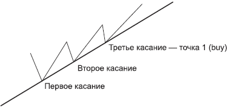
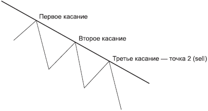
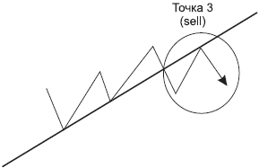
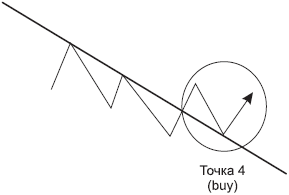
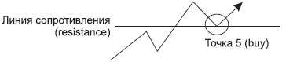
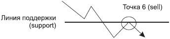
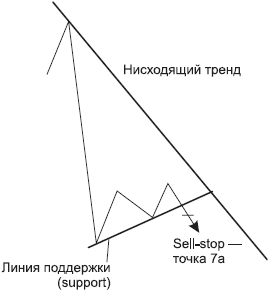
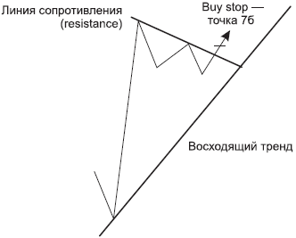
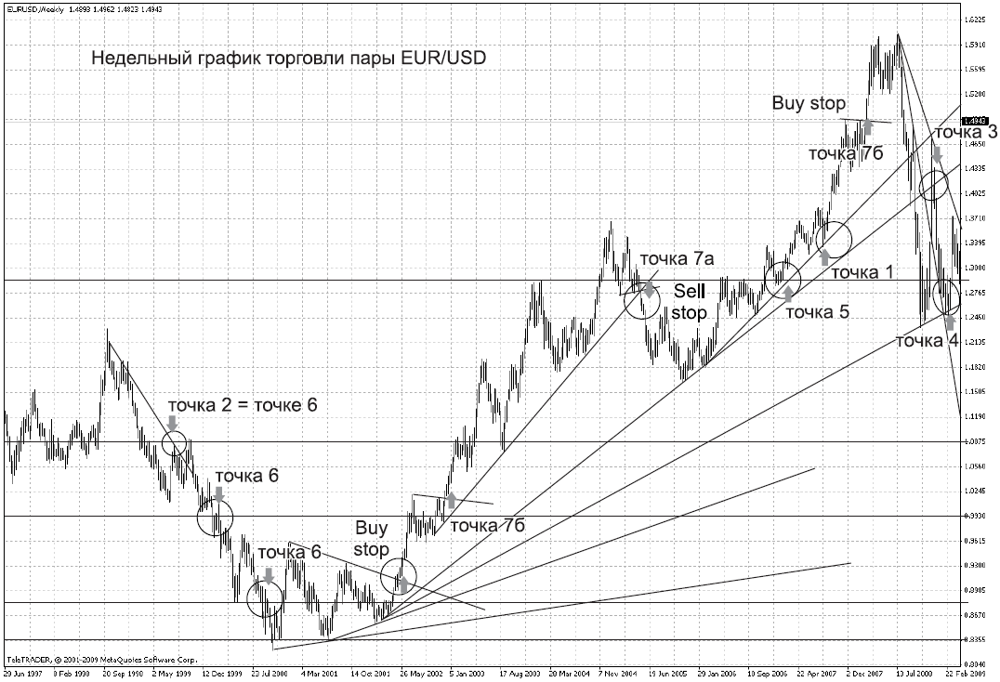

Форекс, очевидное – невероятно

О сколько нам открытий чудных
Готовит просвещенья дух,
И опыт, сын ошибок трудных,
И гений, парадоксов друг!
Не секрет, что многие относятся к Форексу не как к серьезному занятию, а как к казино. Повезет – не повезет... Как карты лягут...
Вспомнилась поездка в Монако. Основная достопримечательность и статья доходов этой страны – конечно, казино в Монте-Карло. Быть в Монте-Карло и не посетить такое «знаковое» место?
Сказано – сделано. Предварительно я наметила бюджет, который определила как рисковый капитал. Я, конечно, понимала, что это не Форекс с его принципами и правилами, а лишь случайное стечение обстоятельств, но тем не менее сердце волновала мысль о том, что здесь проигрывались состояния (но ведь кто-то и выигрывал!!!) и бывали самые известные в мире люди. Хотя что это я кокетничаю? Все равно где-то в глубине души жила маленькая надежда и требовательно скандировала: «Чуда! Чуда!» А вдруг я окажусь среди той горстки, которая выигрывает?.. Вот меня показывают по телевизору – типа, туристка из России выиграла – ...дцать миллионов долларов!... Вот я принимаю поздравления от друзей и знакомых... Вот на собственном красном «Феррари»... Иллюзии были разбиты. Чуда не произошло. Пришлось уходить из казино с мотивационной песенкой: не везет мне в карты, повезет в любви!!! Хотя очень хотелось продолжить игру и не давала покоя провокационная мысль – а вдруг?.. Но Форекс научил меня дисциплине. Я сказала себе: стоп-лосс сработал, остановись. По крайней мере, я побывала в самом известном казино, посмотрела не глазами Дмитрия Крылова, а собственными, увидела богатых бабушек, лениво нажимающих кнопочки «одноруких бандитов», эпатажных джентльменов, скучающих за бокалом вина, брутальных мужчин, подъезжающих на самых дорогих машинах «Ламбарджини», «Бентли», «Порше» и, как в кино, целующихся при встрече друг с другом, их красивых спутниц красивой жизни... И получила еще одно убедительное доказательство, что в казино можно рассчитывать на удачу, а вот мистер Форекс – очень требовательный господин, который ценит грамотный подход и трезвый расчет в сделках. Как говорил Джесси Ливермор: «Во все времена люди действовали на рынке одним и тем же образом, ведомые жадностью, страхом, невежеством и надеждой. Вот почему числовые характеристики и модели постоянно повторяются».
Название этого раздела не случайно. Мы разберем с вами те точки входа в рынок, которые являются настолько очевидными и срабатывают в 90 % случаев из 100 %, что подчас это кажется невероятным.
Вспомните школьную программу по геометрии: через две точки можно провести одну прямую. На графике валют мы также через две точки проводим одну прямую, то есть берем два пика снизу допустим, при восходящем движении, и проводим по этим пикам линию поддержки. Так вот, почти в 90 % случаев (заметьте, не в 50 %, повезет – не повезет, а в подавляющем большинстве случаев!), когда цена приходит к этой линии в третий раз, следует отскок от линии поддержки в сторону направленного движения. Это и есть первая закономерность, которую мы будем учитывать при анализе рынка. Для удобства восприятия назовем точкой 1 точку покупки от линии восходящего тренда при третьем касании(рис. 4.1).

РИС. 4.1.Точка 1 – покупка от линии восходящего тренда при третьем касании
Следует отметить, что чем выше таймфрейм, на котором вы выставили ордер на отскок от линии поддержки, тем большее расстояние пройдет цена. Так, если отскок от дневной линии поддержки составляет, допустим, 300 пунктов, то отскок от 4-часовой линии поддержки может составлять 150 пунктов. Это касается не только данной конкретной точки, но и других точек, которые мы с вами рассмотрим. Однако это лишь пример для простоты восприятия. В каждом конкретном случае надо ориентироваться по ситуации. Рынок ценит творческий подход!
Основной признак нисходящего тренда – каждый последующий пик и каждый последующий спад ниже, чем предыдущий. То есть проводим линию нисходящего тренда по двум точкам, и когда цена подходит к этой линии сопротивления в третий раз, выставляем ордер на продажу (рис. 4.2). Точка 2 – продажа от линии тренда при третьем касании.

РИС. 4.2.Точка 2 – продажа от линии нисходящего тренда при третьем касании
Из теории Доу (см. главу 2) вы уже усвоили, что тренд, который начал движение, будет стремиться продолжиться. И цена, безусловно, может упираться в трендовую линию и отталкиваться от нее более трех раз. Однако чем чаще она будет «подходить» к трендовой линии, тем более уязвимой к пробитию становится эта линия. Но в любом случае необходимо «впитать с молоком матери», что от поддержки необходимо покупать, а от сопротивления продавать. Потому что тренд идет вверх до тех пор, пока не пойдет вниз. И аналогично, тренд идет вниз до тех пор, пока не пойдет вверх. Представляю ваши удивленные лица: «Весело. Ничего не скажешь. А как же понять, когда он пойдет на разворот?»
В том-то и дело, что тренд не разворачивается моментально. То есть пока он идет вверх, мы стараемся покупать от трендовой линии. Но как только цена пробила эту трендовую линию и, что важно, «закрепилась» ниже нее, оставаясь какое-то время под ней, мы радостно потираем руки в предвкушении хорошей перспективы и начинаем искать момент входа в рынок в противоположном направлении – на продажу. Необходимо помнить, что, прежде чем восходящий тренд сменится нисходящем, должно пройти время, и в этот период цена стоит практически на одном месте. Это стояние в узком диапазоне цен часто называют «флэтом».
Именно в этом диапазоне цена разрисовывает нам разворот. Как этот разворот выглядит на графике? Итак, цена, пробив линию восходящего тренда, чаще всего возвращается к этой линии. Подобный разворот некоторые называют обратной петлей, другие – подходом с обратной стороны, третьи – «зигзагом». Но неважно, как его называть, важно, что эта точка – замечательный сигнал разворота рынка (точка 3, рис. 4.3). Точка 3 – продажа от контртренда.
При нисходящем движении на цену «давит» сверху линия сопротивления. Когда цена ее пробивает и несколько периодов закрывает над ней, а затем возвращается к своей бывшей линии сопротивления уже как к линии поддержки, разрисовывая разворот тренда наверх, это и является для нас сигналом на вход в сделку на покупку от контртренда (рис. 4.4). Точка 4 – покупка от контртренда.

РИС. 4.3.Точка 3 – продажа от контртренда

РИС. 4.4.Точка 4 – покупка от контртренда
Кроме наклонных трендовых линий есть еще горизонтальные уровни.
Цена всегда находится как бы между двух огней: либо на нее давит сверху линия сопротивления, либо снизу ее держит линия поддержки.
В принципе, как в жизни. У каждого из нас есть в жизни цель. И, как правило, есть нечто, скажем сопротивление, которое является препятствием нашему продвижению к этой цели. И когда человек преодолевает это препятствие, он начинает верить в собственные силы, самоутверждается, стремится к дальнейшему росту и уже выше ставит для себя жизненную планку.
Цену на рынке двигают люди и их эмоции. Поэтому на цену действуют те же психологические факторы.
Например, есть восходящее движение, но оно встречает препятствие в виде горизонтальной линии сопротивления. Преодолевая это сопротивление, цена самоутверждается, закрывая несколько периодов над ним и возвращаясь к этому поверженному ею сопротивлению уже как к поддержке, набирается там сил для штурма дальнейших целей, забирает всех желающих с собой и стремится к новым триумфам. Эту точку триумфа мы именуем точкой 5 (рис. 4.5). Точка 5 – покупка от уровня сопротивления после его пробития при восходящем движении.

РИС. 4.5.Точка 5 – покупка от уровня сопротивления после его пробития
Наша жизнь состоит не только из взлетов, но и из падений. И каждый из нас наверняка замечал, как сложно подниматься вверх, но как быстро можно упасть, буквально слететь вниз. Но даже падая, мы опираемся на поддержку близких, которые пытаются остановить падение и помочь нам снова начать восхождение. А если мы не готовы принять эту поддержку, мы отталкиваемся от нее, сопротивляясь, и продолжаем свое падение, пока не нащупаем дно, от которого можно реально оттолкнуться.
Так вот, при нисходящем движении, если цена пробивает уровень поддержки и закрывает несколько периодов под ним, это говорит о серьезности ее намерений продолжить падение. Затем чаще всего цена возвращается к той линии, которую она пробила, и отскакивает от нее уже как от сопротивления. Эту точку отскока назовем точкой 6.
Итак, точка 6 – продажа от линии поддержки после ее пробития при нисходящем движении.

РИС. 4.6.Точка 6 – продажа от линии поддержки после ее пробития
И наконец, рассмотрим точку 7.
Часто мы сами создаем себе трудности, которые потом с успехом преодолеваем. А поскольку именно человеческий фактор оказывает влияние на финансовый рынок, то именно мы (люди) двигаем цену и на нее проецируем особенности своего поведения. И точка 7 это наглядно доказывает. Рассмотрим ее подробнее.
Существуют следующие два правила:
1) при нисходящем движении, если цена пробивает линию поддержки, она ускоренно падает вниз – это точка 7а;
2) при восходящем движении, если цена пробивает линию сопротивления, она ускоренно летит вверх – это точка 7 б.
Правило 1 иллюстрирует рис. 4.7.

РИС. 4.7.Точка 7а – при нисходящем движении, если цена пробивает линию поддержки, она ускоренно падает вниз
Обратите внимание, как при нисходящем тренде цена создает для себя некое препятствие в виде линии поддержки и, преодолев ее, летит вниз. В этом случае целесообразно ставить ордер на пробитие этой линии. Дело в том, что если цена пробивает поддержку, тренд придает цене дополнительный импульс (как бы «пинает ее в зад»), и она ускоренно летит вниз, сметая при этом с пути стоп-лоссы и набирая дополнительную скорость падения.
Необходимо отметить, что чем больше временной период, на котором цена преодолела поддержку, тем серьезнее будет отработка ордера. То есть если такую поддержку цена преодолела на недельном периоде, то зафиксировать можно 300-400 пунктов профита, если на дневном – то 200-250 пунктов, а при 4-часовом периоде – 80-120 пунктов.
Правило 2 иллюстрирует рис. 4.8.

РИС. 4.8.Точка 7б – при восходящем движении, если цена пробивает линию сопротивления, она ускоренно летит вверх
По аналогии: при пробитии линии сопротивления тренд придает цене ускорение, и цена начинает свой полет вверх, собирая по пути стоп-лоссы и получая от этого дополнительный импульс к росту. В этом случае ставят ордер на пробитие линии сопротивления (buy stop). Конечно, к этому подключаются и остальные участники рынка, срабатывают их ордера на пробитие линии сопротивления, и цена все стремительнее рвется вверх. И опять же не забываем о временных периодах, на которых произошел прорыв, и исходя из этого выставляем профит.
Эти семь точек – своеобразный трафарет. Наложите этот трафарет на график цены – и получите результат. «Нажми кнопку – получишь результат, и твоя мечта осуществится!» – пела когда-то группа «Технология». Может, это о Форексе? Эти точки работают почти в 90 % случаев на всех периодах, но надежнее всего, безусловно, периоды до 4 часов. И конечно, не зря мы с вами говорили, что необходимо изучать историю валютных пар. Мы же с вами реагируем на одно и то же событие no-разному характеры и темпераменты у всех разные! А кто двигает цену и проецирует на нее свое жизненное восприятие, в том числе свои комплексы? Правильно, мы с вами. А мы разные... И характер движения у всех валют тоже разный. Поэтому стоит отследить, какую из точек чаще всего реализует та или иная валютная пара. Ведь у каждой из них свои пристрастия и маленькие слабости.
Например, пара GBP/CHF не всегда реализует точку 1. Так и вижу скепсис на вашем лице: «Ну вот, а так хорошо все начиналось... говорила, что в 90 % случаев срабатывает, и на тебе...» На самом деле даже если цена пробивает и не реализует точку 1, то автоматически включается точка 3, что дает вам возможность закрыть сделку на покупку без потерь и открыть продажу от контртренда (это и есть точка 3). Главное в этой ситуации – правильно поставить стоп-лосс (см. раздел 5). А вот пара GBP/YPI чаще всего замечательно отрабатывает эти точки. Однако, как всякая красивая женщина, она может позволить себе некоторые вольности. Например, пролететь вашу линию поддержки на 200 пунктов вниз и тут же вернуться на нее, оставив за собой лишь шлейф в виде ложного пробития под названием фолз, после чего опять себя вести как пай-девочка. Поэтому для работы на ней необходим депозит, позволяющий выставить большой стоп-лосс.
Вспомнилась поездка в Ниццу, когда в субботу рано утром мы отправились на местный выездной рынок. Аналог нашей московской «Ярмарки выходного дня». Зрелище весьма колоритное. Интересно посмотреть как на покупателей, так и на продавцов. Поскольку французы предпочитают питаться в кафе и ресторанах, то на рынках покупают то, что пригодится им на пикнике, включая зелень, овощи, фрукты, мясо, рыбу. Поэтому основной ассортимент рынка приблизительно такой. Но в каких количествах! А как ярко, опрятно и празднично на прилавках! А с каким достоинством и как приветливо тебе улыбаются продавцы, местные фермеры, коих очень почитают городские жители! «Бонжур, мадам!» Пессимист может возразить: «Ага, знаем мы цену этой красоте! Небось все геномодифицированное!... Я столкнулась именно с такой реакцией. И не только на рассказ о рынке Ниццы, но и на свою статью «Очевидное – невероятно». Один товарищ написал, что не может быть все так здорово, как я пишу, что это похоже на геномодефицированный продукт – «типа» все красиво написано, а на деле?.. У меня для таких людей только один ответ: изучайте рынок, господа, и тогда вы начнете ему доверять. Мне-то зачем доверять? Вы же меня совсем не знаете... Я лишь рассказываю вам свои наблюденияо рынке, а выводы делать вам, и только вам. Я даже спорить не буду на эту тему. Просто расскажу одну притчу. Встречаются оптимист и пессимист. И оптимист говорит: «Посмотри, какая замечательная погода! Небо голубое, солнце ярко светит, птички поют, озоном пахнет, жить хочется!» Пессимист выслушал восторженную речь, долго смотрел по сторонам и наконец заметил: «А ты видел во-о-он то маленькое облачко? – оно испортит всю погоду». Я не являюсь безудержным оптимистом, но принцип «Нет проблем – есть ситуации, и они решаемы», мне кажется наиболее приемлемым. Все проблемы необходимо решать по мере их поступления. В конце концов, если боитесь, что во-о-он то облачко прольется дождем, захватите зонтик. В данном случае я говорю о стоп-лоссе (см. раздел 5). И «Остапа понесло...» Ну, это я несколько отвлеклась.

РИС. 4.9.Примеры разобранных точек
Понаблюдайте за валютными парами, протестируйте их, выберите для работы те, которые близки вам по духу и по восприятию. На рис. 4.9 приведены примеры тех точек, которые мы с вами разобрали, но на реальном рынке.
Изучайте закономерности и зарабатывайте! Кто вам мешает?